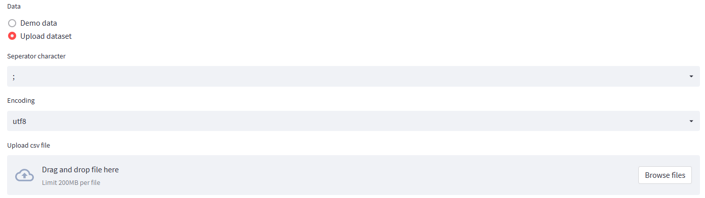
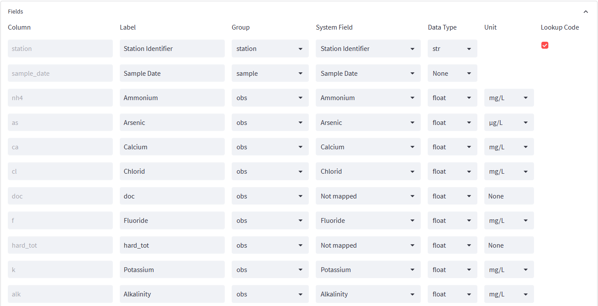
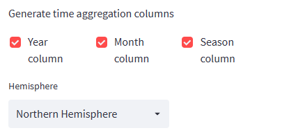
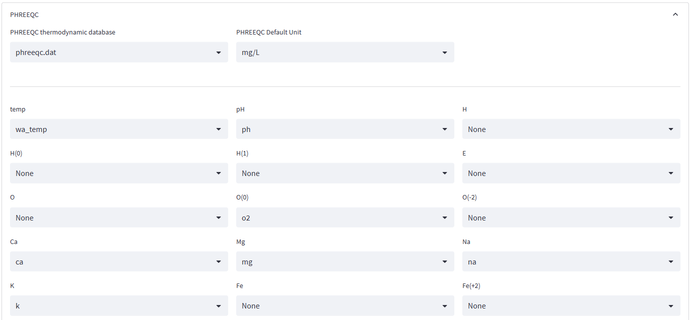

Data
Introduction
This menu allows users to view the demo dataset's metadata and upload and configure their own dataset. The configuration mainly consists of mapping fields of the dataset to system parameters used by Fontus for plotting or calculations. For example, to construct a piper diagram, Fontus needs to know which parameter represents the calcium, magnesium, sodium concentrations, etc. This section also includes the settings for PHREEQC, the geochemical modeling engine used for advanced calculations such as mineral saturation indices. Users must map each PHREEQC model input parameter to the corresponding field in the uploaded dataset.
The radio buttons at the top of the form allow the user to select the built-in demo dataset or to upload a dataset. No further actions are required if the mode is set to demo dataset. However, you might browse the data in the data grid or inspect the data and fields.
Upload
The Datasource radio-button allows the user to upload a file. Once the Upload
Dataset option is selected, various import options and an upload field become available.
| Field | Description |
|---|---|
| Separator character | character separating 2 fields |
| Encoding | file encoding |
| Skip rows | Number of rows containing header information that must be skipped. The column names row must not be skipped |
| Has ND Values | If this checkbox is activated, the program detects columns storing non detectvalues and extract the respective numerical values. Columns including non detects must also be mapped to the numerica data type |
| Upload csv File | Drag the file from your local disk to this field to upload the file |

Preview
The Preview Data File section shows the uploaded data. Use the Download data as CSV button below this table to download the file. Typically, this is not useful since the table corresponds to the user's uploaded file. However, downloading the file may be helpful if the user wishes to download the demo dataset so he can reuse the file as a template for formatting data.
Fields
For many analyses, Fontus needs to be aware of specific parameters such as temperature, pH, calcium, magnesium, etc. Therefore the user must map all column names of the imported file to the corresponding system parameters. The easiest way to achieve this goal is to use the naming convention for your fields, as shown below. Using these names in your column names allows Fontus to map most parameters automatically. If you prefer to keep your data file as is, it is still possible to map columns to system parameters, as explained in the section below.
| Parameter | Description |
|---|---|
| Ca | Calcium concentration in mg/L |
| Mg | Magnesium concentration in mg/L |
| Na | Sodium concentration in mg/L |
| K | Potassium in mg/L is not mandatory, but if present, it will be added to the sodium ternary endpoint in the Piper diagram |
| Cl | Chloride concentration in mg/L |
| SO4 | Sulfate concentration in mg/L |
| HCO3 or Alk | Bicarbonate concentration in mg/L or alternatively alkalinity in mg/L CaCO3 |
| (CO3) | Carbonate concentration in mg/L is not mandatory, but if found, it will be added to the bicarbonate ternary endpoint. |
| pH | Measured pH value |
| temp | measured water temperature |
| longitude | Geographic longitude |
| latitude | Geographic latitude |
| sample_date | Sampling data, must be in the format YYYY-MM-DD or YYYY-MM-DD mm:hh |
| stationid | unique identifier for the sampling location |
The Fields section shows all fields found in the uploaded data and the default settings that the system determines after the import. The user may map columns to the respective system parameter where applicable. If parameter names match the ones mentioned in the list above, Fontus generates the mapping automatically.

Column: The column is the name found in the imported file; it cannot be changed unless the user updates the column name in the file and uploads it again. Column names must be unique and should not include spaces, brackets hyphens or any special characters.
Label: Label used in the plots and tooltips. For concentrations, the label usually holds a name of the constituent, for example Calcium.
Parameter Group: Assigning the parameter group to each field allows Fontus to generate an appropriate parameter options list to select from in various program sections. The following values are available: - station: a station parameter, typically elevation and coordinates. - sample: metadata pertaining to the sampling event such as sample date, sample number - observation: measured values such as concentrations, temperature, pH, etc.
System Field: Columns may be mapped to system parameters, so the application understands the meaning of the data in this column. The available system fields are listed in the table above. Note that if you use these as column names in the uploaded file, the system will automatically detect and map the parameters. If you use a different column name, for example, "total calcium" instead of "ca," you need to map your parameter manually. for system parameters, Fontus suggests a unit, which may be overwritten, if your dataset uses a different unit.
Data Type: Data type for this column: str, float, int, and date. Fontus will assign all String parameters as group-by-parameters.
Unit For parameters with data type float, a unit may be defined. For fields which have been mapped to a system parameter having an associated formula weight and valence, the unit is selected from a predfined selection list. These fields can be presented as different units in the program in the analysis. For all non mapped numeric parameters, the unit is a free-text field and the unit cannot be changed during analysis.
Group-by-parameters are included in the GUI and can be used for filtering, plot legends, and plot grouping. If you want to suppress a column showing up as a filter field, set the respective parameter to "not mapped." the group by field type proves most advantageous for categorical values that can be used for filtering or as legends in plots.
Lookup Code For string parameters, Fontus shows a checkbox where the user may indicate whether the field's data is considered to be categorical. Categorical data consists of codes with a limited number of distinct values. Typical examples include geology, country, and county. Fields flagged as lookup lists can later be used as legends for plots and filters in plots and numerical analysis. By default, Fontus sets all string parameters as lookup codes. If a column of type string should not be used as a filter or as a plot legend, uncheck the checkbox.
The Generate Time Aggregation Columns only appear if a parameter is mapped as the sample_date parameter. If this is the case, you may add one or multiple time aggregation columns: Year, Month, Season. These fields can later be used for filtering or as the legend in a Piper plot. The application uses a simplified algorithm where December to February is assigned to Winter, March to May to spring, June to August to summer, and September to November to fall. Note that for determining the season based on the sampling date, you should define the hemisphere of the project area. For the Southern hemisphere, Fontus will assign the seasons as follows: December to February: summer; March to May: fall, June to August: winter; and September to November: fall. Refrain from using this option if your uploaded data already includes the year, month, or season columns.
Hemisphere: To calculate the season expression from the sample date, users must select the hemisphere of the project location must. If the dataset includes coordinates, Fontus determines the hemisphere automatically, and the parameter becomes read-only.

Apply button: Pressing the apply button will generate the time columns and activate any parameter mapping changes. If the user enabled the Has ND (non detects) values options in the header section of this form, columns containing non-detect values such as <0.05 will be processed as follows:
- a second table will be added having the postfix nd
- Fontus sets all nd columns cells to true if the corresponding entry in the original column starts with a '<' symbol, e.g., <0.05.
- Fontus strips < from the concentration values and replaces the value with its half. Fontus will convert <0.05 to 0.025 in the example above. It also converts the columns from string to numeric to use the data in calculations and graphical representations.
Note that your data is not stored on the server. You will have to upload and configure your data for each new session.
PHREEQC Mapping
PHREEQC is a computer program that is designed to perform a wide range of aqueous geochemical calculations. Fontus uses PHREEQC to perform various calculations. In order go send hydrochemical data to the PHREEQC engine, parameter need to be mapped. Some parameter such as major ions, have already been assinged to system parameter in the previous section and their assignment can be reused for the linking of dataset parameters to the PHREEQC master species. All PHREEQC relevant parameters are defined in this section.
Thermodynamic Database PHREEQC may be executed with various thermodynamic databases each one using a different selection of parameters and in some cases also different thermodynamic data for the same constituents. If you are not familiar with these databases, stick to the default database phreeqc.dat composed of a limited set of agreed upon data.
Default Unit Unit that will be used in cases, where manual concentration input is required such for the Saturation Index Calculator.
Master Species Verify, that every master species having an equivalent parameter in the dataset is mapped to this parameter.
